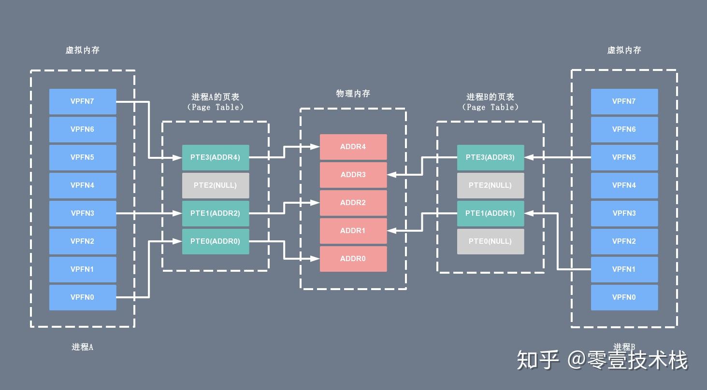
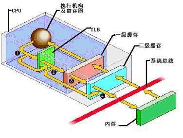

操作系统
- 操作系统（Operating System，简称 OS）是管理计算机硬件与软件资源的程序，是计算机系统的内核与基石；
- 操作系统本质上是运行在计算机上的软件程序 ；
- 操作系统为用户提供一个与系统交互的操作界面 ；
- 操作系统分内核与外壳（我们可以把外壳理解成围绕着内核的应用程序，而内核就是能操作硬件的程序）。
系统调用
根据进程访问资源的特点，我们可以把进程在系统上的运行分为两个级别：
- 用户态(user mode) : 用户态运行的进程或可以直接读取用户程序的数据。
- 系统态(kernel mode):可以简单的理解系统态运行的进程或程序几乎可以访问计算机的任何资源，不受限制。
说了用户态和系统态之后，那么什么是系统调用呢？
我们运行的程序基本都是运行在用户态，如果我们调用操作系统提供的系统态级别的子功能咋办呢？那就需要系统调用了！
也就是说在我们运行的用户程序中，凡是与系统态级别的资源有关的操作（如文件管理、进程控制、内存管理等)，都必须通过系统调用方式向操作系统提出服务请求，并由操作系统代为完成。
这些系统调用按功能大致可分为如下几类：
- 设备管理。完成设备的请求或释放，以及设备启动等功能。
- 文件管理。完成文件的读、写、创建及删除等功能。
- 进程控制。完成进程的创建、撤销、阻塞及唤醒等功能。
- 进程通信。完成进程之间的消息传递或信号传递等功能。
- 内存管理。完成内存的分配、回收以及获取作业占用内存区大小及地址等功能。
零拷贝
零拷贝
零拷贝技术是指计算机执行操作时，CPU不需要先将数据从某处内存复制到另一个特定区域，这种技术通常用于通过网络传输文件时节省CPU周期和内存带宽。
零拷贝并非真的是完全没有数据拷贝的过程，只不过是减少用户态和内核态的切换次数以及CPU拷贝的次数。
DMA拷贝
因为对于一个IO操作而言，都是通过CPU发出对应的指令来完成，但是相比CPU来说，IO的速度太慢了，CPU有大量的时间处于等待IO的状态。
因此就产生了DMA（Direct Memory Access）直接内存访问技术，本质上来说他就是一块主板上独立的芯片，通过它来进行内存和IO设备的数据传输，从而减少CPU的等待时间。
传统IO
传统的IOread+write方式会产生2次DMA拷贝+2次CPU拷贝，同时有4次上下文切换。

mmap + write
通过mmap+write方式则产生2次DMA拷贝+1次CPU拷贝，4次上下文切换，通过内存映射减少了一次CPU拷贝，可以减少内存使用，适合大文件的传输。

sendfile
sendfile方式是新增的一个系统调用函数，产生2次DMA拷贝+1次CPU拷贝，但是只有2次上下文切换。因为只有一次调用，减少了上下文的切换，但是用户空间对IO数据不可见，适用于静态文件服务器。

sendfile+DMA gather
sendfile+DMA gather方式产生2次DMA拷贝，没有CPU拷贝，而且也只有2次上下文切换。虽然极大地提升了性能，但是需要依赖新的硬件设备支持。

PageCache有什么用
内核缓冲区实际上是磁盘高速缓存（PageCache）
- 通过 DMA 把磁盘里的数据搬运到内存里，这样就可以用读内存替换读磁盘。用 PageCache 来缓存最近被访问的数据，当空间不足时淘汰最久未被访问的缓存。
- 读磁盘数据的时候，优先在 PageCache 找，如果数据存在则可以直接返回；如果没有，则从磁盘中读取，然后缓存 PageCache 中。
- PageCache 使用了预读功能
针对大文件的传输，不应该使用 PageCache，也就是说不应该使用零拷贝技术，因为可能由于 PageCache 被大文件占据，而导致「热点」小文件无法利用到 PageCache，这样在高并发的环境下，会带来严重的性能问题。
大文件的传输
- 前半部分，内核向磁盘发起读请求，但是可以不等待数据就位就可以返回，于是进程此时可以处理其他任务；
- 后半部分，当内核将磁盘中的数据拷贝到进程缓冲区后，进程将接收到内核的通知，再去处理数据；
- 绕开 PageCache 的 I/O 叫直接 I/O，使用 PageCache 的 I/O 则叫缓存 I/O。通常，对于磁盘，异步 I/O 只支持直接 I/O
用户态内核态
内核态和用户态
操作系统的核心是内核，独立于普通的应用程序，可以访问受保护的内存空间，也有访问底层硬件设备的权限。
为了避免用户进程直接操作内核，保证内核安全，操作系统将虚拟内存划分为两部分，一部分是内核空间（Kernel-space），一部分是用户空间（User-space）。
在 Linux 系统中，内核模块运行在内核空间，对应的进程处于内核态；而用户程序运行在用户空间，对应的进程处于用户态。
内核空间
内核空间总是驻留在内存中，它是为操作系统的内核保留的。应用程序是不允许直接在该区域进行读写或直接调用内核代码定义的函数的。虚拟内存，按访问权限可以分为进程私有和进程共享两块区域。
- 进程私有的虚拟内存：每个进程都有单独的内核栈、页表、task 结构以及 mem_map 结构等。
- 进程共享的虚拟内存：属于所有进程共享的内存区域，包括物理存储器、内核数据和内核代码区域。
用户空间
每个普通的用户进程都有一个单独的用户空间，处于用户态的进程不能访问内核空间中的数据，也不能直接调用内核函数的 ，因此要进行系统调用的时候，就要将进程切换到内核态才行。用户空间包括以下几个内存区域：
- 运行时栈：由编译器自动释放，存放函数的参数值，局部变量和方法返回值等。每当一个函数被调用时，该函数的返回类型和一些调用的信息被存储到栈顶，调用结束后调用信息会被弹出弹出并释放掉内存。栈区是从高地址位向低地址位增长的，是一块连续的内在区域，最大容量是由系统预先定义好的，申请的栈空间超过这个界限时会提示溢出，用户能从栈中获取的空间较小。
- 运行时堆：用于存放进程运行中被动态分配的内存段，位于 BSS 和栈中间的地址位。由开发人员申请分配（malloc）和释放（free）。堆是从低地址位向高地址位增长，采用链式存储结构。频繁地 malloc/free 造成内存空间的不连续，产生大量碎片。当申请堆空间时，库函数按照一定的算法搜索可用的足够大的空间。因此堆的效率比栈要低的多。
- 代码段：存放 CPU 可以执行的机器指令，该部分内存只能读不能写。通常代码区是共享的，即其它执行程序可调用它。假如机器中有数个进程运行相同的一个程序，那么它们就可以使用同一个代码段。
- 未初始化的数据段：存放未初始化的全局变量，BSS 的数据在程序开始执行之前被初始化为 0 或 NULL。
- 已初始化的数据段：存放已初始化的全局变量，包括静态全局变量、静态局部变量以及常量。
- 内存映射区域：例如将动态库，共享内存等虚拟空间的内存映射到物理空间的内存，一般是 mmap 函数所分配的虚拟内存空间。
内核态和用户态的区别
内核态可以执行任意命令，调用系统的一切资源，而用户态只能执行简单的运算，不能直接调用系统资源。
用户态必须通过系统接口（System Call），才能向内核发出指令。
- 内核空间可以访问所有的 CPU 指令和所有的内存空间、I/O 空间和硬件设备。
- 用户空间只能访问受限的资源，如果需要特殊权限，可以通过系统调用获取相应的资源。
- 用户空间允许页面中断，而内核空间则不允许。
- 内核空间和用户空间是针对线性地址空间的
- 所有内核进程（线程）共用一个地址空间，而用户进程都有各自的地址空间。
操作系统为什么知道什么时候进入内核态
用户态切换到内核态的3种方式
a. 系统调用
这是用户态进程主动要求切换到内核态的一种方式，用户态进程通过系统调用申请使用操作系统提供的服务程序完成工作，比如fork()，而系统调用的机制其核心还是使用了操作系统为用户特别开放的一个中断来实现，例如Linux的int 80h中断。
b. 异常
当CPU在执行运行在用户态下的程序时，发生了某些事先不可知的异常，这时会触发由当前运行进程切换到处理此异常的内核相关程序中，也就转到了内核态，比如缺页异常。
c. 外围设备的中断
当外围设备完成用户请求的操作后，会向CPU发出相应的中断信号，这时CPU会暂停执行下一条即将要执行的指令转而去执行与中断信号对应的处理程序，如果先前执行的指令是用户态下的程序，那么这个转换的过程自然也就发生了由用户态到内核态的切换。比如硬盘读写操作完成，系统会切换到硬盘读写的中断处理程序中执行后续操作等。
这3种方式是系统在运行时由用户态转到内核态的最主要方式，其中系统调用可以认为是用户进程主动发起的，异常和外围设备中断则是被动的。
缺页中断是什么
当一个程序访问一个映射到地址空间却实际并未加载到物理内存的页（page）时， 硬件向软件发出的一次中断（或异常）就是一个缺页中断或叫页错误（page fault）。
缺页中断是一种特殊的中断，它与一般的中断的区别是：
（1）在指令执行期间产生和处理中断信号，CPU通常在一条指令执行完后检查是否有中断请求，而缺页中断是在指令执行时间，发现所要访问的指令或数据不在内存时产生和处理的。
（2）一条指令在执行期间可能产生多次缺页中断。如一条读取数据的多字节指令，指令本身跨越两个页面，若指令后一部分所在页面和数据所在页面均不在内存，则该指令的执行至少产生两次缺页中断。
Major/Minor page fault区别
那么如果访问一个地址时，与该地址空间vma绑定的数据还存在于Disk上，那么此时即会触发一次major fault；如果访问一个地址时，与之绑定的vma对应的地址空间已经被内核加载到了Page Cache中，那么此时只需要把该Page映射到vma中即可，这种异常即为一次minor fault。
内存
操作系统的内存管理主要是做什么
操作系统的内存管理主要负责内存的分配与回收（malloc 函数：申请内存，free 函数：释放内存），另外地址转换也就是将逻辑地址转换成相应的物理地址等功能也是操作系统内存管理做的事情。
常见的几种内存管理机制
简单分为连续分配管理方式和非连续分配管理方式这两种。连续分配管理方式是指为一个用户程序分配一个连续的内存空间，常见的如 块式管理 。同样地，非连续分配管理方式允许一个程序使用的内存分布在离散或者说不相邻的内存中，常见的如页式管理 和 段式管理。
- 块式管理 ： 远古时代的计算机操系统的内存管理方式。将内存分为几个固定大小的块，每个块中只包含一个进程。如果程序运行需要内存的话，操作系统就分配给它一块，如果程序运行只需要很小的空间的话，分配的这块内存很大一部分几乎被浪费了。这些在每个块中未被利用的空间，我们称之为碎片。
- 页式管理 ：把主存分为大小相等且固定的一页一页的形式，页较小，相对相比于块式管理的划分力度更大，提高了内存利用率，减少了碎片。页式管理通过页表对应逻辑地址和物理地址。
- 段式管理 ： 页式管理虽然提高了内存利用率，但是页式管理其中的页实际并无任何实际意义。 段式管理把主存分为一段段的，每一段的空间又要比一页的空间小很多 。但是，最重要的是段是有实际意义的，每个段定义了一组逻辑信息，例如,有主程序段 MAIN、子程序段 X、数据段 D 及栈段 S 等。 段式管理通过段表对应逻辑地址和物理地址。
- 段页式管理机制结合了段式管理和页式管理的优点。简单来说段页式管理机制就是把主存先分成若干段，每个段又分成若干页，也就是说 段页式管理机制 中段与段之间以及段的内部的都是离散的。
虚拟内存
什么是虚拟内存
我们平时使用电脑特别是 Windows 系统的时候太常见了。很多时候我们使用点开了很多占内存的软件，这些软件占用的内存可能已经远远超出了我们电脑本身具有的物理内存。为什么可以这样呢？ 正是因为 虚拟内存 的存在，通过 虚拟内存 可以让程序可以拥有超过系统物理内存大小的可用内存空间。另外，虚拟内存为每个进程提供了一个一致的、私有的地址空间，它让每个进程产生了一种自己在独享主存的错觉（每个进程拥有一片连续完整的内存空间）。这样会更加有效地管理内存并减少出错。
虚拟内存为每个进程提供了一个一致的、私有的地址空间，它让每个进程产生了一种自己在独享主存的错觉（每个进程拥有一片连续完整的内存空间）。
而实际上，虚拟内存通常是被分隔成多个物理内存碎片，还有部分暂时存储在外部磁盘存储器上，在需要时进行数据交换，加载到物理内存中来。
目前，大多数操作系统都使用了虚拟内存，如 Windows 系统的虚拟内存、Linux 系统的交换空间等等。
每个用户进程维护了一个单独的页表（Page Table），虚拟内存和物理内存就是通过这个页表实现地址空间的映射的。

当进程执行一个程序时，需要先从先内存中读取该进程的指令，然后执行，获取指令时用到的就是虚拟地址。这个虚拟地址是程序链接时确定的（内核加载并初始化进程时会调整动态库的地址范围）。为了获取到实际的数据，CPU 需要将虚拟地址转换成物理地址，CPU 转换地址时需要用到进程的页表（Page Table），而页表（Page Table）里面的数据由操作系统维护。
其中页表（Page Table）可以简单的理解为单个内存映射（Memory Mapping）的链表（当然实际结构很复杂），里面的每个内存映射（Memory Mapping）都将一块虚拟地址映射到一个特定的地址空间（物理内存或者磁盘存储空间）。每个进程拥有自己的页表（Page Table），和其它进程的页表（Page Table）没有关系。
访问物理内存
- 用户进程向操作系统发出内存申请请求
- 系统会检查进程的虚拟地址空间是否被用完，如果有剩余，给进程分配虚拟地址
- 系统为这块虚拟地址创建的内存映射（Memory Mapping），并将它放进该进程的页表（Page Table）
- 系统返回虚拟地址给用户进程，用户进程开始访问该虚拟地址
- CPU 根据虚拟地址在此进程的页表（Page Table）中找到了相应的内存映射（Memory Mapping），但是这个内存映射（Memory Mapping）没有和物理内存关联，于是产生缺页中断
- 操作系统收到缺页中断后，分配真正的物理内存并将它关联到页表相应的内存映射（Memory Mapping）。中断处理完成后 CPU 就可以访问内存了
- 当然缺页中断不是每次都会发生，只有系统觉得有必要延迟分配内存的时候才用的着，也即很多时候在上面的第 3 步系统会分配真正的物理内存并和内存映射（Memory Mapping）进行关联
优点
- 地址空间：提供更大的地址空间，并且地址空间是连续的，使得程序编写、链接更加简单
- 进程隔离：不同进程的虚拟地址之间没有关系，所以一个进程的操作不会对其它进程造成影响
- 数据保护：每块虚拟内存都有相应的读写属性，这样就能保护程序的代码段不被修改，数据块不能被执行等，增加了系统的安全性
- 内存映射：有了虚拟内存之后，可以直接映射磁盘上的文件（可执行文件或动态库）到虚拟地址空间。这样可以做到物理内存延时分配，只有在需要读相应的文件的时候，才将它真正的从磁盘上加载到内存中来，而在内存吃紧的时候又可以将这部分内存清空掉，提高物理内存利用效率，并且所有这些对应用程序是都透明的
- 共享内存：比如动态库只需要在内存中存储一份，然后将它映射到不同进程的虚拟地址空间中，让进程觉得自己独占了这个文件。进程间的内存共享也可以通过映射同一块物理内存到进程的不同虚拟地址空间来实现共享
- 物理内存管理：物理地址空间全部由操作系统管理，进程无法直接分配和回收，从而系统可以更好的利用内存，平衡进程间对内存的需求
局部性原理
局部性原理是虚拟内存技术的基础，正是因为程序运行具有局部性原理，才可以只装入部分程序到内存就开始运行。
局部性原理表现在以下两个方面：
- 时间局部性 ：如果程序中的某条指令一旦执行，不久以后该指令可能再次执行；如果某数据被访问过，不久以后该数据可能再次被访问。产生时间局部性的典型原因，是由于在程序中存在着大量的循环操作。
- 空间局部性 ：一旦程序访问了某个存储单元，在不久之后，其附近的存储单元也将被访问，即程序在一段时间内所访问的地址，可能集中在一定的范围之内，这是因为指令通常是顺序存放、顺序执行的，数据也一般是以向量、数组、表等形式簇聚存储的。
时间局部性是通过将近来使用的指令和数据保存到高速缓存存储器中，并使用高速缓存的层次结构实现。空间局部性通常是使用较大的高速缓存，并将预取机制集成到高速缓存控制逻辑中实现。虚拟内存技术实际上就是建立了 “内存一外存”的两级存储器的结构，利用局部性原理实现髙速缓存。
虚拟存储器
基于局部性原理，在程序装入时，可以将程序的一部分装入内存，而将其他部分留在外存，就可以启动程序执行。由于外存往往比内存大很多，所以我们运行的软件的内存大小实际上是可以比计算机系统实际的内存大小大的。在程序执行过程中，当所访问的信息不在内存时，由操作系统将所需要的部分调入内存，然后继续执行程序。另一方面，操作系统将内存中暂时不使用的内容换到外存上，从而腾出空间存放将要调入内存的信息。这样，计算机好像为用户提供了一个比实际内存大的多的存储器——虚拟存储器。
实际上，我觉得虚拟内存同样是一种时间换空间的策略，你用 CPU 的计算时间，页的调入调出花费的时间，换来了一个虚拟的更大的空间来支持程序的运行。不得不感叹，程序世界几乎不是时间换空间就是空间换时间。
虚拟内存技术的实现
虚拟内存的实现需要建立在离散分配的内存管理方式的基础上。 虚拟内存的实现有以下三种方式：
- 请求分页存储管理 ：建立在分页管理之上，为了支持虚拟存储器功能而增加了请求调页功能和页面置换功能。请求分页是目前最常用的一种实现虚拟存储器的方法。请求分页存储管理系统中，在作业开始运行之前，仅装入当前要执行的部分段即可运行。假如在作业运行的过程中发现要访问的页面不在内存，则由处理器通知操作系统按照对应的页面置换算法将相应的页面调入到主存，同时操作系统也可以将暂时不用的页面置换到外存中。
- 请求分段存储管理 ：建立在分段存储管理之上，增加了请求调段功能、分段置换功能。请求分段储存管理方式就如同请求分页储存管理方式一样，在作业开始运行之前，仅装入当前要执行的部分段即可运行；在执行过程中，可使用请求调入中断动态装入要访问但又不在内存的程序段；当内存空间已满，而又需要装入新的段时，根据置换功能适当调出某个段，以便腾出空间而装入新的段。
- 请求段页式存储管理
请求分页存储管理建立在分页管理之上。他们的根本区别是是否将程序全部所需的全部地址空间都装入主存，这也是请求分页存储管理可以提供虚拟内存的原因，我们在上面已经分析过了。
它们之间的根本区别在于是否将一作业的全部地址空间同时装入主存。请求分页存储管理不要求将作业全部地址空间同时装入主存。基于这一点，请求分页存储管理可以提供虚存，而分页存储管理却不能提供虚存。
为什么要有虚拟地址空间？
先从没有虚拟地址空间的时候说起吧！没有虚拟地址空间的时候，程序都是直接访问和操作的都是物理内存 。但是这样有什么问题呢？
- 用户程序可以访问任意内存，寻址内存的每个字节，这样就很容易（有意或者无意）破坏操作系统，造成操作系统崩溃。
- 想要同时运行多个程序特别困难，比如你想同时运行一个微信和一个 QQ 音乐都不行。为什么呢？举个简单的例子：微信在运行的时候给内存地址 1xxx 赋值后，QQ 音乐也同样给内存地址 1xxx 赋值，那么 QQ 音乐对内存的赋值就会覆盖微信之前所赋的值，这就造成了微信这个程序就会崩溃。
总结来说：如果直接把物理地址暴露出来的话会带来严重问题，比如可能对操作系统造成伤害以及给同时运行多个程序造成困难。
通过虚拟地址访问内存有以下优势：
- 程序可以使用一系列相邻的虚拟地址来访问物理内存中不相邻的大内存缓冲区。
- 程序可以使用一系列虚拟地址来访问大于可用物理内存的内存缓冲区。当物理内存的供应量变小时，内存管理器会将物理内存页（通常大小为 4 KB）保存到磁盘文件。数据或代码页会根据需要在物理内存与磁盘之间移动。
- 不同进程使用的虚拟地址彼此隔离。一个进程中的代码无法更改正在由另一进程或操作系统使用的物理内存。
TLB（translation lookaside buffer）作用
快表，直译为旁路快表缓冲，页表缓冲。

- 当CPU执行机构收到应用程序发来的虚拟地址后，首先到TLB中查找相应的页表数据
- 如果TLB中正好存放着所需的页表，则称为TLB命中（TLB Hit）
- 接下来CPU再依次看TLB中页表所对应的物理内存地址中的数据是不是已经在一级、二级缓存里了，若没有则到内存中取相应地址所存放的数据。如果TLB中没有所需的页表，则称为TLB失败（TLB Miss），接下来就必须访问物理内存中存放的页表，同时更新TLB的页表数据。
TLB的容量越大，则它所能存放的页表条目数越多（类似于增大CPU一级、二级缓存容量的作用），这就意味着缓存命中率的增加，这样，就能大大减少CPU直接访问内存的次数，实现了性能提升。
32位操作系统里进程可以分配内存大小
创建一个进程时，操作系统会为该进程分配一个 4GB 大小的虚拟进程地址空间。 之所以是 4GB ，是因为在 32 位的操作系统中，一个指针长度是 4 字节 （32位）， 2的32次 方个地址寻址能力是从 0x00000000~0xFFFFFFFF 即为 4GB 大小的容量。
段页式管理机制
- 分段机制：8086处理器，寻址空间达到1MB，即地址线扩展了20位，由于制作20位的寄存器较为困难，为了能在16位的寄存器的基础上，寻址20位的地址空间，引入了
段的概念，即内存地址=段基址左移4位+偏移 - 分页机制：随着寻址空间的进一步扩大、虚拟内存技术的引入，操作系统引入了分页机制。引入分页机制后，逻辑地址经过段机制转换得到的地址仅是中间地址，还需要通过页机制转换，才能得到实际的物理地址。
逻辑地址 -->(分段机制) 线性地址 -->(分页机制) 物理地址。
快表和多级页表
在分页内存管理中，很重要的两点是：
- 虚拟地址到物理地址的转换要快。
- 解决虚拟地址空间大，页表也会很大的问题。
快表
为了解决虚拟地址到物理地址的转换速度，操作系统在 页表方案 基础之上引入了 快表 来加速虚拟地址到物理地址的转换。我们可以把块表理解为一种特殊的高速缓冲存储器（Cache），其中的内容是页表的一部分或者全部内容。作为页表的 Cache，它的作用与页表相似，但是提高了访问速率。由于采用页表做地址转换，读写内存数据时 CPU 要访问两次主存。有了快表，有时只要访问一次高速缓冲存储器，一次主存，这样可加速查找并提高指令执行速度。
使用快表之后的地址转换流程是这样的：
- 根据虚拟地址中的页号查快表；
- 如果该页在快表中，直接从快表中读取相应的物理地址；
- 如果该页不在快表中，就访问内存中的页表，再从页表中得到物理地址，同时将页表中的该映射表项添加到快表中；
- 当快表填满后，又要登记新页时，就按照一定的淘汰策略淘汰掉快表中的一个页。
看完了之后你会发现快表和我们平时经常在我们开发的系统使用的缓存（比如 Redis）很像，的确是这样的，操作系统中的很多思想、很多经典的算法，你都可以在我们日常开发使用的各种工具或者框架中找到它们的影子。
多级页表
引入多级页表的主要目的是为了避免把全部页表一直放在内存中占用过多空间，特别是那些根本就不需要的页表就不需要保留在内存中。多级页表属于时间换空间的典型场景，具体可以查看下面这篇文章
分页机制和分段机制有哪些共同点和区别呢？
- 共同点：
- 分页机制和分段机制都是为了提高内存利用率，较少内存碎片。
- 页和段都是离散存储的，所以两者都是离散分配内存的方式。但是，每个页和段中的内存是连续的。
- 区别：
- 页的大小是固定的，由操作系统决定；而段的大小不固定，取决于我们当前运行的程序。
- 分页仅仅是为了满足操作系统内存管理的需求，而段是逻辑信息的单位，在程序中可以体现为代码段，数据段，能够更好满足用户的需要。
逻辑（虚拟）地址和物理地址
我们编程一般只有可能和逻辑地址打交道，比如在 C 语言中，指针里面存储的数值就可以理解成为内存里的一个地址，这个地址也就是我们说的逻辑地址，逻辑地址由操作系统决定。物理地址指的是真实物理内存中地址，更具体一点来说就是内存地址寄存器中的地址。物理地址是内存单元真正的地址。
页面置换算法的作用?常见的页面置换算法有哪些?
地址映射过程中，若在页面中发现所要访问的页面不在内存中，则发生缺页中断 。缺页中断 就是要访问的页不在主存，需要操作系统将其调入主存后再进行访问。 在这个时候，被内存映射的文件实际上成了一个分页交换文件。
当发生缺页中断时，如果当前内存中并没有空闲的页面，操作系统就必须在内存选择一个页面将其移出内存，以便为即将调入的页面让出空间。用来选择淘汰哪一页的规则叫做页面置换算法，我们可以把页面置换算法看成是淘汰页面的规则。
- OPT 页面置换算法（最佳页面置换算法） ：理想情况，不可能实现，一般作为衡量其他置换算法的方法。
- FIFO 页面置换算法（先进先出页面置换算法） : 总是淘汰最先进入内存的页面，即选择在内存中驻留时间最久的页面进行淘汰。
- LRU 页面置换算法（最近未使用页面置换算法） ：LRU（Least Currently Used）算法赋予每个页面一个访问字段，用来记录一个页面自上次被访问以来所经历的时间 T，当须淘汰一个页面时，选择现有页面中其 T 值最大的，即最近最久未使用的页面予以淘汰。
- LFU 页面置换算法（最少使用页面排序算法） : LFU（Least Frequently Used）算法会让系统维护一个按最近一次访问时间排序的页面链表，链表首节点是最近刚刚使用过的页面，链表尾节点是最久未使用的页面。访问内存时，找到相应页面，并把它移到链表之首。缺页时，置换链表尾节点的页面。也就是说内存内使用越频繁的页面，被保留的时间也相对越长。
memcache 的内存管理机制
memcache使用slab allocator机制来内存管理。
slab allocator原理：先将内存划分为多个slab class仓库，每个仓库切分成不同尺寸的小块chunk。需要存储内容时候，判断内容大小，为其选择合理的仓库
memcache中lru删除机制：当某个单元被请求时,维护一个计数器,通过计数器来判断最近谁最少被使用。
Memcached懒惰检测对象过期机制：
- 不主动检测item对象是否过期,而是在get时才会检查item对象是否过期应该删除；
- 当删除item对象时,一般不释放内存空间,而是作标记删除,将指针放入slot回收插槽,下次分配的时候直接使用
- 当内存空间满的时候,才会根据LRU算法把最近最少使用的item对象删除
优点：解决了内存碎片问题
缺点：Chunk的空间会浪费，只能通过调优因子以及大小接近的数据放入一个MC实例。
操作系统中的中断是什么
中断是指程序执行过程中，遇到急需处理的事件时，暂时中止CPU上现行程序的运行，转去执行相应的事件处理程序，待处理完成后再返回原程序被中断处或调度其他程序执行的过程
写时复制
写时复制指的是当多个进程共享同一块数据时，如果其中一个进程需要对这份数据进行修改，那么就需要将其拷贝到自己的进程地址空间中。这样做并不影响其他进程对这块数据的操作，每个进程要修改的时候才会进行拷贝，所以叫写时拷贝。
这种方法在某种程度上能够降低系统开销，如果某个进程永远不会对所访问的数据进行更改，那么也就永远不需要拷贝。
进程和线程
- 进程是操作系统分配（存储）资源的最小单元，线程是操作系统调度的最小单元。
- 一个进程的所有线程都是共享这个进程的同一个虚拟地址空间的，也就是说从线程的角度来说，它们看到的物理资源都是一样的，这样就可以通过共享变量的方式来表示共享资源，也就是直接共享内存的方式解决了线程通信的问题
- 进程拥有独立的虚拟内存地址空间和内核数据结构（页表，打开文件表等），当子进程修改了虚拟页之后，会通过写时拷贝创建真正的物理页。线程共享进程的虚拟地址空间和内核数据结构，共享同样的物理页
- 线程的上下文切换只需要保存线程的一些运行时的数据，比如线程的id、寄存器中的值、栈数据。而不需要像进程上下文切换那样要保存页表、文件描述符表、信号控制数据和进程信息等数据。
- 进程采用父子结构，init进程是最顶端的父进程，其他进程都是从init进程派生出来的。这样就很容易理解进程是如何共享内核的代码和数据的了
- 一个应用程序可以有多个进程，执行多个程序代码，多个线程只能执行一个程序代码，共享进程的代码段
- 进程的用户栈独享栈空间，线程的用户栈共享虚拟内存中的栈空间，没有进程高效
为什么进程切换开销大
进程上下文切换保存的内容有：
1.页表 – 对应虚拟内存资源
2.文件描述符表/打开文件表 – 对应打开的文件资源
3.寄存器 – 对应运行时数据
4.信号控制信息/进程运行信息
线程的上下文切换只需要保存线程的一些运行时的数据，比如线程的id、寄存器中的值、堆栈数据。而不需要像进程上下文切换那样要保存页表、文件描述符表、信号控制数据和进程信息等数据。
进程间通信
并且由于进程拥有独立的内存地址空间，导致了进程之间无法利用直接的内存映射进行进程间通信。进程的通信机制主要有：管道、命名管道、消息队列、信号量、共享内存、信号、套接字。
1.信号
信号是在软件层次上对中断机制的一种模拟。信号是异步的，一个进程不必通过任何操作来等待信号的到达。信号是进程间通信机制中唯一的异步通信机制。
2.信号量
信号量也可以说是一个计数器，常用来处理进程或线程同步的问题，特别是对临界资源的访问同步问题。临界资源：为某一时刻只能由一个进程或线程操作的资源，当信号量的值大于或等于0时，表示可以供并发进程访问的临界资源数，当小于0时，表示正在等待使用临界资源的进程数。
3.消息队列
消息队列是存放在内核中的消息链表，每个消息队列由消息队列标识符标识，与管道不同的是，消息队列存放在内核中，只有在内核重启时才能删除一个消息队列，内核重启也就是系统重启，同样消息队列的大小也是受限制的。
4.共享内存
共享内存就是分配一块能被其他进程访问的内存。共享内存可以说是最有用的进程间通信方式，也是最快的IPC形式。两个不同进程A、B共享内存的意思是，同一块物理内存被映射到进程A、B各自的进程地址空间。进程A可以即时看到进程B对共享内存中数据的更新，反之亦然。由于多个进程共享同一块内存区域，必然需要某种同步机制，互斥锁和信号量都可以。
采用共享内存通信的一个显而易见的好处是效率高，因为进程可以直接读写内存，而不需要任何数据的拷贝。对于像管道和消息队列等通信方式，则需要在内核和用户空间进行四次的数据拷贝，而共享内存则只拷贝两次数据：一次从输入文件到共享内存区，另一次从共享内存区到输出文件。
5.管道
管道传递数据是单向性的，只能从一方流向另一方，也就是一种半双工的通信方式；
只用于有亲缘关系的进程间的通信，亲缘关系也就是父子进程或兄弟进程；
没有名字并且大小受限，传输的是无格式的流，所以两进程通信时必须约定好数据通信的格式。
管道它就像一个特殊的文件，但这个文件之存在于内存中，在创建管道时，系统为管道分配了一个页面作为数据缓冲区，进程对这个数据缓冲区进行读写，以此来完成通信。
6.命名管道
命名管道（NamedPipe）是服务器进程和一个或多个客户进程之间通信的单向或双向管道。
不同于匿名管道的是：
命名管道可以在不相关的进程之间和不同计算机之间使用，服务器建立命名管道时给它指定一个名字，任何进程都可以通过该名字打开管道的另一端，根据给定的权限和服务器进程通信。命名管道只能在具有亲缘关系的进程间通信了。
命名管道是个设备文件，存储在文件系统中，没有亲缘关系的进程也可以访问，但是它要按照先进先出的原则读取数据。同样也是半双工的。
7.套接字
套接字也是一种进程间通信机制，与其他通信机制不同的是，它可用于不同主机间的进程通信。
线程间的通信
线程间通信：由于多线程共享地址空间和数据空间，所以多个线程间的通信是一个线程的数据可以直接提供给其他线程使用。
1.锁机制
包括互斥锁、条件变量、读写锁；
互斥锁提供了以排他方式防止数据结构被并发修改的方法。
使用条件变量可以以原子的方式阻塞进程，直到某个特定条件为真为止。对条件的测试是在互斥锁的保护下进行的。条件变量始终与互斥锁一起使用。
读写锁允许多个线程同时读共享数据，而对写操作是互斥的。
2.信号量机制
包括无名线程信号量和命名线程信号量
3.信号机制
类似进程间的信号处理，线程间的通信目的主要是用于线程同步。所以线程没有像进程通信中的用于数据交换的通信机制
管道需要进入内核态吗？
每个进程各自有不同的用户地址空间,任何一个进程的全局变量在另一个进程中都看不到，所以进程之间要交换数据必须通过内核,在内核中开辟一块缓冲区,进程A把数据从用户空间拷到内核缓冲区,进程B再从内核缓冲区把数据读走,内核提供的这种机制称为进程间通信。
区别
根本区别：进程是操作系统资源分配的基本单位，而线程是处理器任务调度和执行的基本单位
资源开销：每个进程都有独立的代码和数据空间（程序上下文），程序之间的切换会有较大的开销；线程可以看做轻量级的进程，同一类线程共享代码和数据空间，每个线程都有自己独立的运行栈和程序计数器（PC），线程之间切换的开销小。
包含关系：一个程序至少有一个进程,一个进程至少有一个线程.
内存分配：同一进程的线程共享本进程的地址空间和资源，而进程之间的地址空间和资源是相互独立的
执行过程：每个独立的进程有程序运行的入口、顺序执行序列和程序出口。但是线程不能独立执行，必须依存在应用程序中，由应用程序提供多个线程执行控制，两者均可并发执行
线程的共享资源和私有资源
线程共享包括：进程代码段、进程的公有数据、进程打开的文件描述符、信号的处理器、进程的当前目录和进程用户ID与进程组ID、堆。
私有资源：线程上下文（所属线程的栈区、程序计数器、栈指针以及函数运行使用的寄存器）
1.线程ID
每个线程都有自己的线程ID，这个ID在本进程中是唯一的。进程用此来标识线程。
2.寄存器组的值
由于线程间是并发运行的，每个线程有自己不同的运行线索，当从一个线程切换到另一个线程上时，必须将原有的线程的寄存器集合的状态保存，以便将来该线程在被重新切换到时能得以恢复。
3.线程的栈
栈是保证线程独立运行所必须的。
线程函数可以调用函数，而被调用函数中又是可以层层嵌套的，所以线程必须拥有自己的函数栈，使得函数调用可以正常执行，不受其他线程的影响。
4.错误返回码
由于同一个进程中有很多个线程在同时运行，可能某个线程进行系统调用后设置了errno值，而在该线程还没有处理这个错误，另外一个线程就在此时被调度器投入运行，这样错误值就有可能被修改。所以，不同的线程应该拥有自己的错误返回码变量。
5.线程的信号屏蔽码
由于每个线程所感兴趣的信号不同，所以线程的信号屏蔽码应该由线程自己管理。但所有的线程都共享同样的信号处理器。
6.线程的优先级
由于线程需要像进程那样能够被调度，那么就必须要有可供调度使用的参数，这个参数就是线程的优先级。
为了保证对象的内存分配过程中的线程安全性，HotSpot虚拟机提供了一种叫做TLAB(Thread Local Allocation Buffer)的技术。
在线程初始化时，虚拟机会为每个线程分配一块TLAB空间，只给当前线程使用，当需要分配内存时，就在自己的空间上分配，这样就不存在竞争的情况，可以大大提升分配效率。
所以，“堆是线程共享的内存区域”这句话并不完全正确，因为TLAB是堆内存的一部分，他在读取上确实是线程共享的，但是在内存分配上，是线程独享的。
不同进程间是如何实现共享内存的
在Linux中，每个进程都有属于自己的进程控制块（PCB）和地址空间（Addr Space），并且都有一个与之对应的页表，负责将进程的虚拟地址与物理地址进行映射，通过内存管理单元（MMU）进行管理。两个不同的虚拟地址通过页表映射到物理空间的同一区域，它们所指向的这块区域即共享内存。
当两个进程通过页表将虚拟地址映射到物理地址时，在物理地址中有一块共同的内存区，即共享内存，这块内存可以被两个进程同时看到。这样当一个进程进行写操作，另一个进程读操作就可以实现进程间通信。但是，我们要确保一个进程在写的时候不能被读，因此我们使用信号量来实现同步与互斥。
进程的调度算法
- 先到先服务(FCFS)调度算法 : 从就绪队列中选择一个最先进入该队列的进程为之分配资源，使它立即执行并一直执行到完成或发生某事件而被阻塞放弃占用 CPU 时再重新调度。
- 短作业优先(SJF)的调度算法 : 从就绪队列中选出一个估计运行时间最短的进程为之分配资源，使它立即执行并一直执行到完成或发生某事件而被阻塞放弃占用 CPU 时再重新调度。
- 时间片轮转调度算法 : 时间片轮转调度是一种最古老，最简单，最公平且使用最广的算法，又称 RR(Round robin)调度。每个进程被分配一个时间段，称作它的时间片，即该进程允许运行的时间。
- 多级反馈队列调度算法 ：前面介绍的几种进程调度的算法都有一定的局限性。如短进程优先的调度算法，仅照顾了短进程而忽略了长进程 。多级反馈队列调度算法既能使高优先级的作业得到响应又能使短作业（进程）迅速完成。，因而它是目前被公认的一种较好的进程调度算法，UNIX 操作系统采取的便是这种调度算法。
- 优先级调度 ： 为每个流程分配优先级，首先执行具有最高优先级的进程，依此类推。具有相同优先级的进程以 FCFS 方式执行。可以根据内存要求，时间要求或任何其他资源要求来确定优先级。
文件系统
文件描述符？
PCB进程控制块：本质是结构体，成员是文件描述符列表，里面有文件描述符0/1/2/…/1023，一个进程默认打开文件的最大数是1024，取用的时候用表中可用的最小的，平时返回的fd就是0123这些数（相当于索引下标，就是文件描述符），内容是一个个的指针，指针指向一个个的文件结构体struct file{…}，指向的文件就是成功打开的文件
我们创建文件时这个下标是从3开始的，因为0，1，2分别对应stdin，stdout，stderror
软链接和硬链接？
硬链接：
本质上和源文件没什么不同，和源文件共享同一个inode节点，通过这个inode节点来访问文件数据。文件系统会维护一个引用计数，只要有文件指向这个区块，它就不会从硬盘上消失。
创建方法：ln [源文件] [链接文件.hard]
软链接（符号链接）：
本质上是一个独立的文件，有自己的inode节点，文件数据中保存源文件的路径，通过这个路径来访问源文件
创建方法：ln -s [源文件][链接文件.soft]
区别
删除源文件后硬链接还可以访问源文件数据，软链接失效。
原因：硬链接与源文件共用同一个inode,删除源文件后只是减少了inode的一个链接数，硬链接文件还可以继续访问源文件数据。而软链接是通过源文件路径来访问数据，但是源文件已经删除，所以路径访问不到，无法获取源文件数据。
删除一个文件，文件并不会立即删除，而是先删除了目录项中的文件名信息，并使inode的链接数减一，只有链接数为0时文件才会删除
水平、边缘触发
水平触发:如果文件描述符已经就绪可以非阻塞的执行IO操作了,此时会触发通知.允许在任意时刻重复检测IO的状态.select,poll就属于水平触发.
只要文件描述符关联的读内核缓冲区非空，有数据可以读取，就一直发出可读信号进行通知，
当文件描述符关联的内核写缓冲区不满，有空间可以写入，就一直发出可写信号进行通知
LT模式支持阻塞和非阻塞两种方式。
边缘触发:如果文件描述符自上次状态改变后有新的IO活动到来,此时会触发通知.在收到一个IO事件通知后要尽可能多的执行IO操作,因为如果在一次通知中没有执行完IO那么就需要等到下一次新的IO活动到来才能获取到就绪的描述符.信号驱动式IO就属于边缘触发
当文件描述符关联的读内核缓冲区由空转化为非空的时候，则发出可读信号进行通知，
当文件描述符关联的内核写缓冲区由满转化为不满的时候，则发出可写信号进行通知